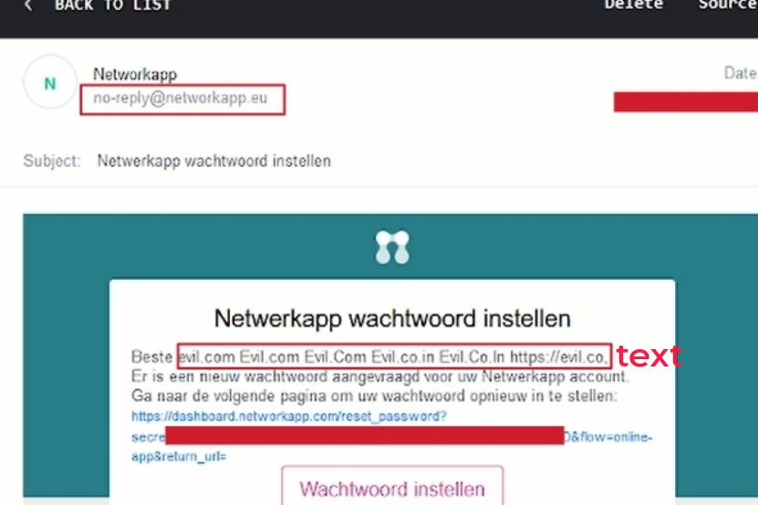
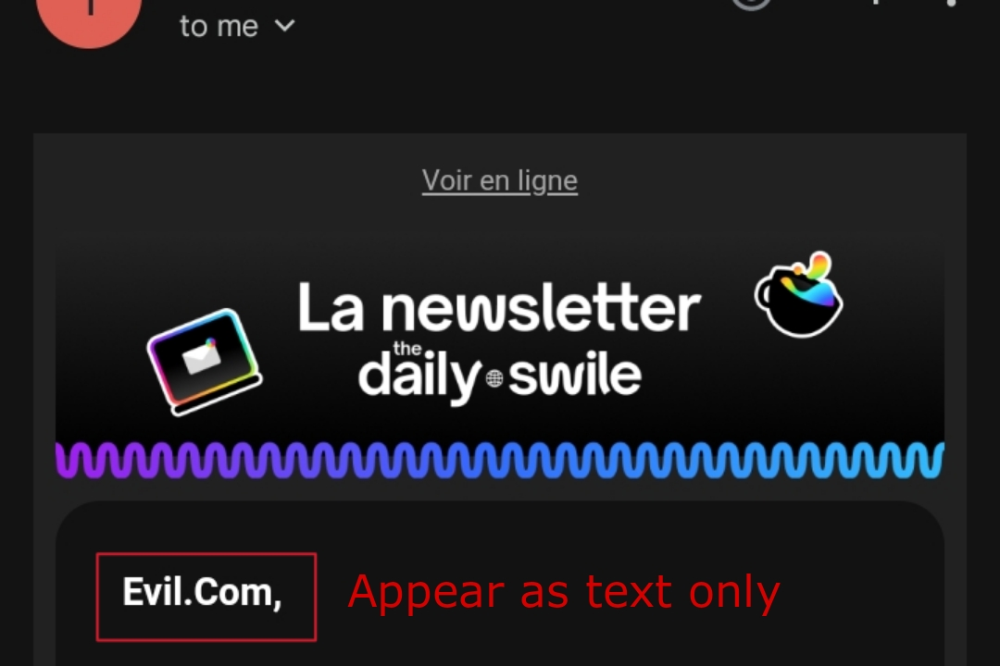

Hyperlink Injection Bypass
- Evil.com evil.com get converted to Evil.com where the domain name starts with UPPERCASE letter "E".
- Evil.Com Here every word which starts after a period/dot get UPPERCASE i.e "E" and "C".
- evil com Websites escapes the period/dot (.) so that it appear as text only.
- evil. com There is space after period/dot (.) o that it don't appear as link.
- evilcom Here also it escapes period/dot (.) but give no space between letters.
- Not accept period/dot (.) Directly website deny that period/dot symbol (.) is not accepted and only texts are allowed.
- Not accept https:// Simply not accept http:// or https:// but here it can be easily bypassed by just entering evil.com.
- Whitelisting trusted domains Only allow trusted domains of company like google.com, bing.com, etc.
- Other Methods It may use any other methods.
- Hey Hackers ,
- My name is Parth Narula,
and I'm excited to share some research I've done on hyperlink injection bypass method.
We're all familiar with standard hyperlink injection, where attackers embed malicious links in input fields. Today, I want to discuss a different technique I've discovered. This article explores a bypass method for hyperlink injection that I identified through my research.
- I hope you find this information valuable!
1. Different Mail Clients Behaviors
- Email clients handle hyperlink injection differently because of variations in their security measures. These measures involve how they validate user-entered data on both the user's device (client-side) and the email server (server-side). This validation determines whether the text is converted into a clickable link. Additionally, some email clients might consider the behavior of other email clients when handling potential threats.
1. Gmail
- Let's take a closer look at Gmail, one of the most popular email clients. Interestingly, Gmail treats these four variations of "evil.com" differently when displaying them as hyperlinks:
evil.com and Evil.Co.In: These appear as clickable links.
Evil.com and Evil.Com: These remain as plain text, not clickable.
- Interesting This behavior might seem puzzling, but it's likely due to Gmail's specific algorithms for link detection. While the exact reasons are not publicly known, it could be related to factors like:
- Gmail depends on case sensitivity thats why it convert evil.com in hyperlink and not convert Evil.com and Evil.Com in link, but you guys now would ask what about Evil.Co.In as its also Uppercase so it shouldn't be converted into hyperlink but it get converted because maybe Gmail only put proper validation checks upto one period domain like evil.com and not evil.co.in so, In todays article we are going to exploit this flaw or configuration done my gmail.
2. Whatsapp behavior
- While WhatsApp isn't an email client,
it's worth noting that it also exhibits variations in how hyperlinks are displayed across different devices like iOS, Android, and WhatsApp Web. This variation could be due to differences in how WhatsApp implements security measures on each platform.
- Whatsapp Web In WhatsApp Web these all four evil.com, Evil.com, Evil.Com, Evil.Co.In will appear to be a hyperlink let me tell you why.
It is because whatsapp treat a text with . (dot/period) as url but only if it is entered with correct TLD (.com,.co,.xyz) Like evil.xyy will not appear as hyperlink in whatsapp web as it contains a period but not correct TLD and on the other hand evil.xyz will be treated as link as it full fills both the conditions i.e text must contain one or more than one period and correct TLD and doesn't matter its uppercase or lowercase. In outlook it also shows behavior like whatsapp web.
- Whatsapp Android In Android App these two evil.com, Evil.com appear to be a hyperlink but not these Evil.Com, Evil.Co.In
It is because now, here whatsapp put more strict restrictions as it convert text into link with valid TLD and also with lowercase TLD with a period. Like Evil.com, evil.com, EVIL.com, Evil.Co.in will be appear as hyperlink as it fullfil all three conditions i.e contains one or more period, correct TLD and TLD is in lowercase (.com) here it doesn't matter that text before period is uppercase or lowercase but Evil.Com or Evil.Co.In will not be appear as hyperlink because it fullfil two conditions but not fullfil that TLD should be lowercase.
- Whatsapp IOS In IOS Application these three evil.com, Evil.com, Evil.Com will appear as hyperlink and this Evil.Co.In will not appear as hyperlink let me tell you why.
It is because now, here whatsapp in IOS is designed differently. It doesn't think that TLD should be lowercase or but according to me now its think that domain with double TLD should have second TLD lowercase like Evil.Co.in and not Evil.Co.In as it doesn't care about domains with single period so thats why it converts these evil.com, Evil.com and Evil.Com in hyperlink.
3. TempMail
- TempMail, a popular service for generating temporary email addresses for people like us, handles hyperlinks in a unique way compared to traditional email clients like Gmail or Outlook. Instead of relying on its own internal processing, TempMail displays hyperlinks based on how the sender's email client interprets them.
In simpler terms, if you send an email from Gmail to a TempMail address, and the text appears as a clickable link in Gmail, it will also appear as a link in TempMail. Conversely, if the text shows as plain text in Gmail, it will remain as text in TempMail. By default according to me it treat everything as text.
- Note You guys have must seen this kind of behavior that it don't show evil.com as hyperlink when you are trying to find hyperlink injection because the website email client like no-reply@website.com also treat evil.com as text. Proton Mail also show quite same behavior as TempMail.

2. Hyperlink Injection Protection
- We've seen how email clients handle links in different ways.
Now, let's explore how websites themselves fight back against hyperlink injection. Different websites put different kind
of techniques to protect from hyperlink injection. Like some don't allow the use of "https://" and some convert the
link into uppercase so it appear to be text or some don't allow use of periods/dot (.) or some escape these things and
many more techniques used by different websites.
Attackers might try injecting malicious links like "evil.com" into input fields that get reflected back in emails. However, websites employ various protection or escaping techniques to prevent such attempts from succeeding. Like it convert evil.com to the followings listed below so that it appear as text only in email:-

3. Bypassing Hyperlink Protection
- In this article We will only look to bypass the protection method used by companies told in 1st and 2nd point above i.e Evil.com and Evil.Com
You know about the different mailing clients behavior so this would be easy to understand. I have perform this bypass technique or misconfiguration in GMAIL.
evil.com and Evil.Co.In: These appear as clickable links.
Evil.com and Evil.Com: These remain as plain text, not clickable.
We can use a simple thing that add a double period/dot link ( like: evil.com.in, bbc.co.uk ) rather then single period/dot domain ( like: evil.com, scriptjacker.in ) into the input field that is reflected back when receiving email (like: name field).
- Now, You guys will think what's this, but YES guys this a small flaw which will allow you to bypass hyperlink protection. As you know that Evil.com and Evil.Com doesn't appear as link in gmail because of websites escaping or protection technique but if we put double period domain bbc.co.uk so it will appear as link in gmail even if website converts it into UPPERCASE like Evil.Co.Uk, EVIL.CO.UK, Evil.co.uk, Evil.Co.uk, etc so also it will appear as hyperlink.
Hence, the 1st and 2nd escaping technique is 100% successfully bypassed in GMAIL. You can see some PoC's below:-
4. Conclusion
- So mates, I hope you had learnt something new after reading this article. You can share your views in my Contact Page and If you guys also want to become a author of a article so also you can email me or fill contact form and I will post your article here with your name, Only if the topic is interesting :)